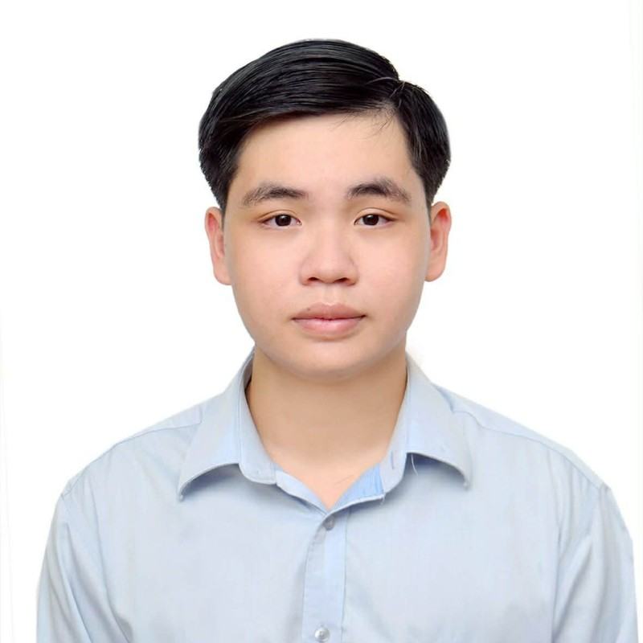

Business Analytics & Data
From settlement files to structured datasets — a Business Analytics graduate who turns messy processes and unclear requirements into decisions people can act on.

About
I studied Business Analytics at Swinburne because I wanted to work where data and AI meet real decisions. After graduating, I took a Conveyancing Assistant role at EasyLink Conveyancing on purpose — it gave me 15–20 live property files a month to manage end-to-end, real deadlines, and real domain knowledge in a regulated industry.
That stage has done its job. I'm now looking to move that same instinct for pattern-spotting and process discipline into business analytics and data full-time — cleaning datasets, building dashboards, and using AI tools to turn ambiguous problems into structured, measurable solutions.
Skills
Background
Projects
Diagnosed why Office Essentials Australia was losing customers — RFM segmentation, CLV and cohort-retention analysis traced a 58.6% churn rate to two underperforming regions — then shipped a Power BI report with a targeted retention plan.
Cleaned four years of messy global EV sales data in Tableau Prep — deduplicating records, fixing broken formulas — then built 19 dashboards analysing performance, financials and operations, plus an 8-quarter regional sales forecast.
Advised an EdTech client on entering the US market — pricing, go-to-market mode and a 5-year financial model projecting break-even at 211 units — presented directly to the client and recognised with two IMC awards.
Modelled a coaching referral business's assignment workflow end-to-end in Level 2 BPMN — AS-IS, TO-BE and a BPMS automation layer — diagnosing four process issues and redesigning the flow around five BPM best practices.